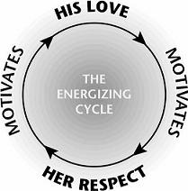

Because the Crazy Cycle is always ready to spin, you and your spouse need to get on the Energizing Cycle and stay there. The following chapters contain important scriptures that apply to the Love and Respect Connection in marriage. I also share principles, techniques, and common sense to help husbands and wives learn how to practice the Love and Respect message on a daily basis. As we learned in part 1, husbands need particular help with love, and wives need particular help with respect.
To simplify matters, I use two acronyms containing six areas of key importance for each spouse: C-O-U-P-L-E is advice for husbands with separate chapters on Closeness, Openness, Understanding, Peacemaking, Loyalty, and Esteem. C-H-A-I-R-S covers advice for wives and includes separate chapters on Conquest, Hierarchy, Authority, Insight, Relationship, and Sexuality.
It takes constant work to stay on the Energizing Cycle. These brief chapters are full of biblical help and practical tips that will help you build a better and stronger marriage.